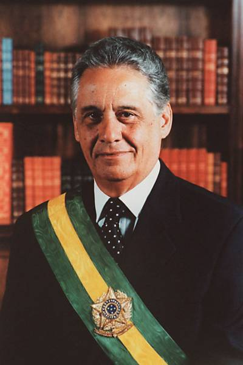
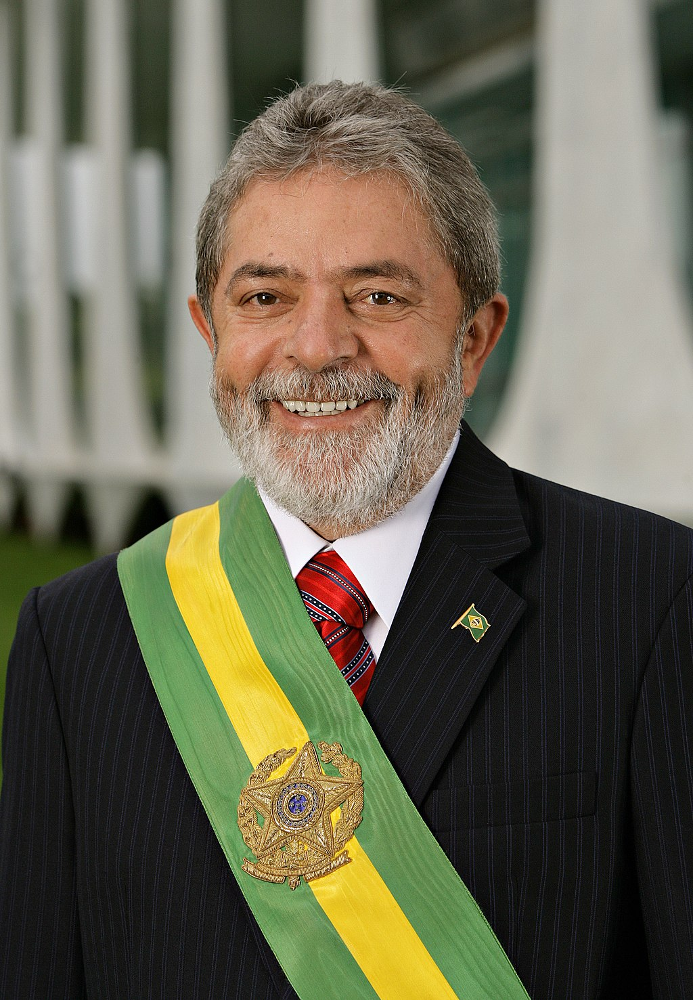
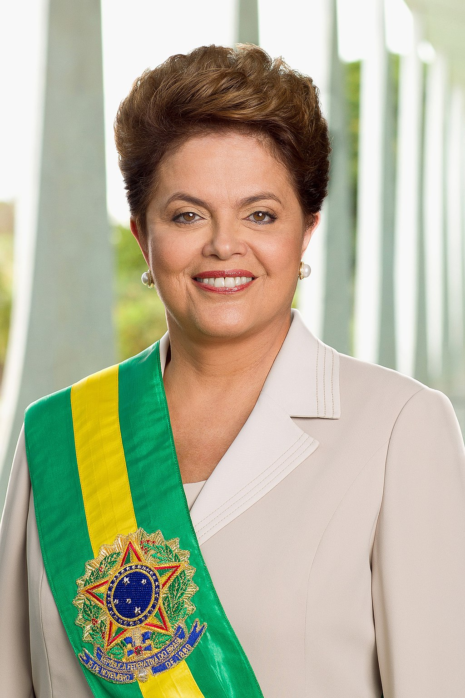
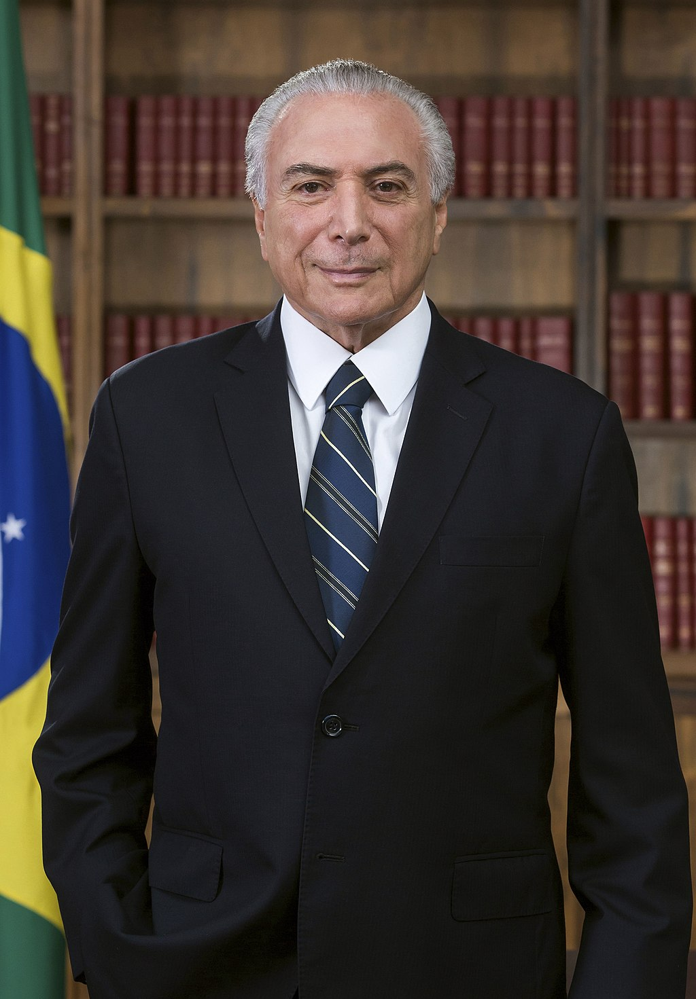
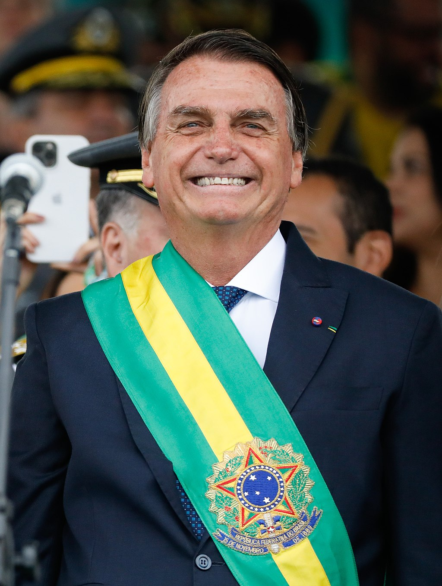

Os Presidentes do Brasil
Desde que eu voltar do Brasil, há cinco presidentes do brazil. Olha para baixo para vê-los:
-
Fernando Henrique Cardoso
- 1995 - 2022
- Partido da Social Democracia Brasileira
Crédito da Imagem: Agência BrasilLuiz Inácio Lula da Silva- 2003 - 2010
- Partido dos Trabalhadores
Crédito da Imagem: Ricardo StuckertDilma Rousseff- 2011 - 2016
- Partido dos Trabalhadores
Crédito da Imagem: Attribution: Palácio do PlanaltoMichel Temer- 2016 - 2018
- Movimento Democrático Brasileiro
Crédito da Imagem: Beto Barata/PRJair Bolsonaro- 2019 - presente
- Partido Liberal
Crédito da Imagem: Palácio do PlanaltoLuiz Inácio Lula da Silva- Presidente Eleito
- Partido dos Trabalhadores
Crédito da Imagem: Ricardo StuckertEleição Presidencial de 2022

Protestos por Resultados Eleitorais
Nationwide Protests Spark In Brazil After Historic Presidential Election
Bolsonaro's supporters refuse to accept Brazil's election result
Brazil election: Bolsonaro calls on protesters to end blockades on nation's roads